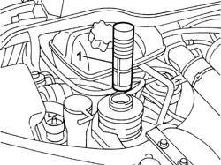
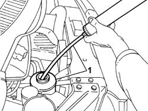
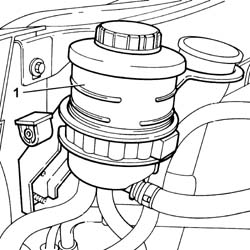

0010T70 POWER ASSISTED STEERING FLUID - REPLACE
- Path
- Procedures > 00 MAINTENANCE > 0010 NEW VEHICLES AND MAINTENANCE > 0010T VEHICLE FLUIDS > 0010T70 POWER ASSISTED STEERING FLUID - REPLACE
- Kind
- repair procedure (removal / refitting; the operation number is the code)
- Applies to
- all engines; all production periods
- Interactive page
- https://sloeber94.github.io/elrnDB-fUlss/en/#/179006827
Applies to: all engines; all production periods
1. Undo the plug and remove the power steering fluid filter element.

Applies to: all engines; all production periods
1. Draw off the oil in the reservoir using a syringe and collect it in a suitable container.

Applies to: all engines; all production periods
1. Fill the power steering system with the appropriate fluid to the MAX notch on the reservoir.
 | Description | Qty. | Component | Type | Classification |
|---|---|---|---|---|---|
. | TUTELA GI/A | 1.3 litri | POWER ASSISTED STEERING CIRCUIT | Oil | - |
- Carefully clean the power steering fluid filter and refit in its seat in the tank, then close the plug.

Topics that link to this page (17)
- 1004B14 POWER UNIT WITH AUTOMATIC TRANSMISSION R + R
- 1020D14 FRONT CRANKSHAFT OIL SEAL COVER - R.R AND REPLACE SEALS FOR VERSIONS WITH OIL PUMP ON CRANKSHAFT, TIMING SIDE
- 1020D18 FRONT CRANK SHAFT COVER OIL SEAL - REPLACE
- 1032B46 TOOTHED DRIVE PULLEY - R + R
- 1032C18 MOBILE TIMING SYSTEM TENSIONER - R + R FOR 24 VALVE ENGINES
- 1032C31 FIXED TIMING TENSIONER - R R
- 1032D12 TIMING SYSTEM PROTECTIVE COVER(S) - R + R
- 1036C39 TIMING VARIATOR ON CYLINDER HEAD INTAKE CAMSHAFT - R R
- 1088C10 WATER PUMP - R + R
- 2130A10 AUTOMATIC TRANSMISSION - R + R
- 2130B12 AUTOMATIC TRANSMISSION TORQUE CONVERTER - R+R
- 4130B20 POWER STEERING PUMP - R.R.
- 4130B27 POWER ASSISTED STEERING PUMP AND ALTERNATOR MOUNTING - R.R.
- 4130B10 POWER STEERING FLUID RESEVOIR R R
- 4130B34 SUPPLY PIPE FROM FLUID RESEVIOR TO POWER STEERING PUMP R R
- 4130B52 HEAT EXCHANGER PIPE - R+R
- 5530A10 ALTERNATOR - R+R